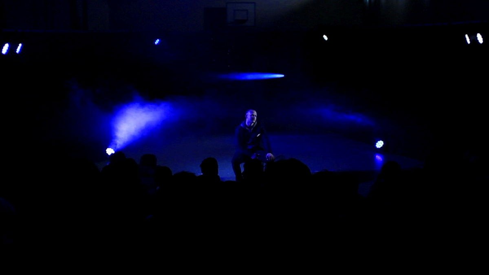
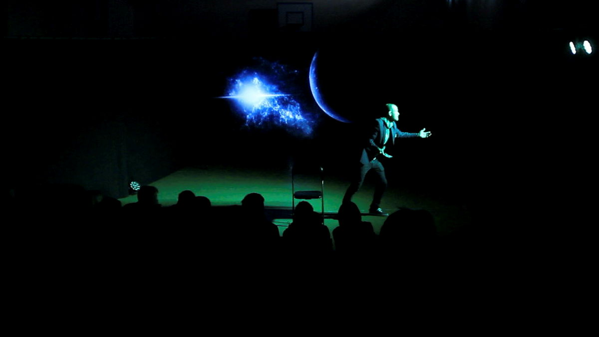
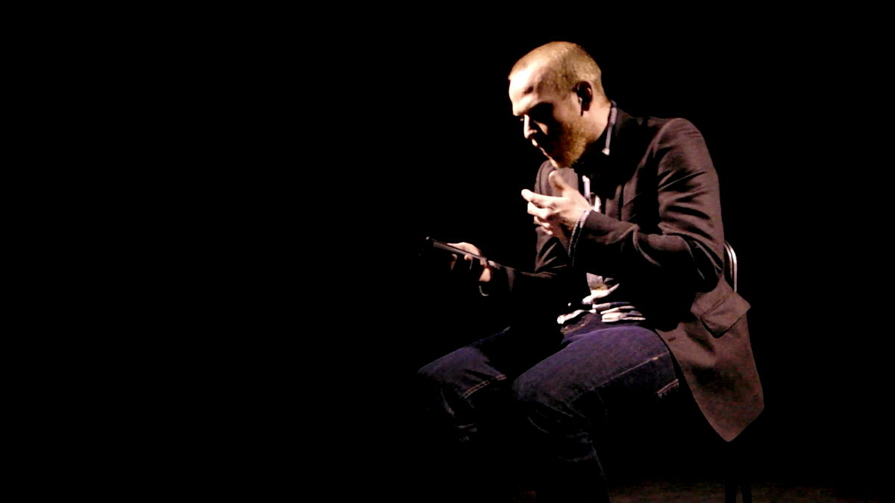

Anmeldelse / Ungestemmer / Scenekunstbruket
«Dette er en fascinerende og tidsaktuell monolog om spilleavhengighet, med en tematikk som treffer all ungdom (og kanskje noen av de voksne også).»

En rise and fall-historie av stort format
Utforsk forestillingen01Prolog
Det er i hvert fall det han prøver å forklare.
Spilt i alt fra små klasserom, auditoriumer til store kultursaler.
02Forestillingen
Teater / Science fiction / Gaming

Han skal bli universets beste spiller. Han har en strategi. Og det begynner med bare én runde til.
I Galaxy Empire møter vi en ung hovedperson med store ambisjoner. Spillet åpner en annen virkelighet, der alt virker mulig. Men når ambisjonen vokser, begynner grensene mellom fantasi og hverdag å slå sprekker.
Teater, videoprojeksjon, lys og lyd møter science fiction og humor. Midt i det store universet finnes en menneskelig historie.
03Under overflaten
Om gaming, mobilbruk og flukten inn i noe større. Om unge mennesker, avhengighet og den uklare grensen mellom virkelighet og fantasi.

05Respons / Forskning
I Kulturtankens forskningsrapport får Galaxy Empire mange positive tilbakemeldinger. Analysen fremhever skuespillerens innlevelse, lydeffektene og gjenkjenneligheten i gaming-tematikken.
«Du ble liksom interessert i en historie, det er ikke sånn at det var noe spennende, men han gjorde det spennende.»
«Alle som spiller – uansett hva de spiller – de kan jo kjenne seg igjen.»
«Dette er en fascinerende og tidsaktuell monolog om spilleavhengighet, med en tematikk som treffer all ungdom (og kanskje noen av de voksne også).»
«Forestillingen var veldig god med en svært god skuespiller. Faktisk burde også foreldre sett denne…»
«Strålende skuespillerprestasjon og et viktig tema. Godt komponert.»
06På veien
Fra premieren i 2016
Markedet for Scenekunst, Sandefjord
07For arrangører
Galaxy Empire er aktuell for Den kulturelle skolesekken og for andre arrangører.
Andre praktiske opplysninger avtaler vi over e-post.
Ta Galaxy Empire med til dere
Flere tilbakemeldinger fra skolene (5)+